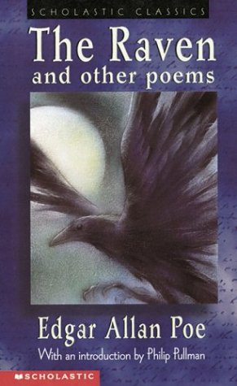

The Raven And Other Poems
The Raven and Other Poems is a
poetry collection by Edgar Allan
Poe, published in 1845 by Wiley and
Putnam.
It includes Poe's famous poem *“The
Raven”*, which brought him literary
fame that same year.
The collection also features
Lenore, To Helen,
Israfel, and "The Haunted
Palace."
Themes include death, lost love,
madness, the supernatural, and
beauty.
Poe's style is known for musical
rhythm, internal rhyme, and dark,
gothic imagery.
This book helped establish Poe as a
major figure in American Romantic
and Gothic literature.